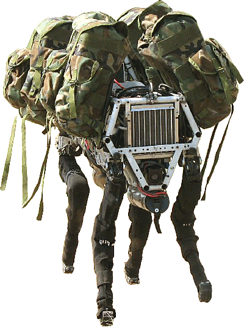

Moore’s law states that every two years the number of transistors that will fit in a dense circuit board will double. This basically means that the same circuit board can be halved in size every two years or so. The number may not be exact, but it shows that technology improves exponentially. Modern robotics are no exception to this, they just now are becoming capable of more than you may have expected. In military, robots like the ones from Boston Dynamics are in use right now. These robots can perform useful tasks such as transport or even search & rescue. These robots can do work that would have been a great risk for humans. The fact that robots can potentially save lives in this application justifies their cost. Only recently have robots been worth producing in numbers, before they were just too expensive and not capable enough. Robots are being used by military right now and are very practical. Soon they will be integrated in more ways than ever into commercial and residential applications as their price goes down. Amazon had announced using drones for deliveries back in 2013. By the end of last year, they were able to successfully deliver by drone to a group of trial customers. Amazon also currently uses robots to transport shelves to workers, reducing the amount of work they must do. Generally residential technology is the last to become mainstream. This is because they have less money to spend and usually only need technology for convenience. Currently there is a product called Shapescale which is a 3D scanning scale. The benefit of this product is that it can show you areas where you’re gaining or loosing fat or muscle. This product is still relatively expensive for a scale, it can be reserved at a total cost of $699. Another residential robot is called the Pillo which is a pill dispenser and chatbot. Soon robotics will be used for other conveniences around the home. This technology is still in its early stages, it will become cheaper and more capable with time. Since we now have robotics like this for the home, it shows that the technology is reaching critical mass and will soon be used by masses.